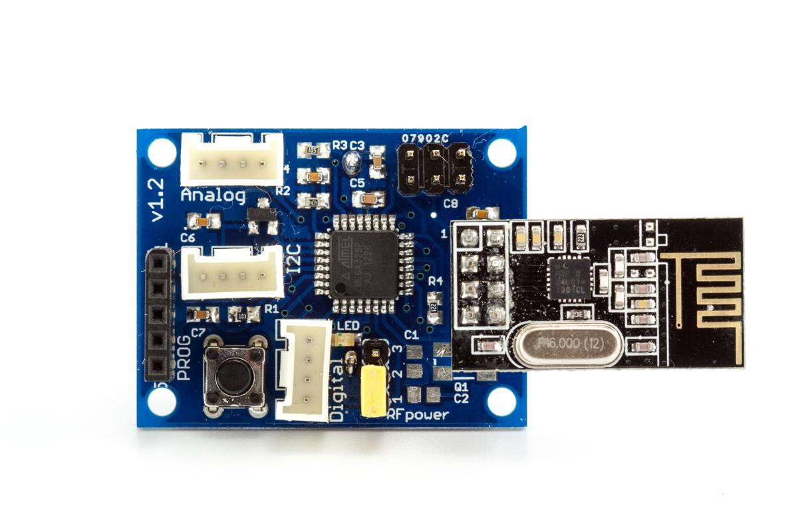
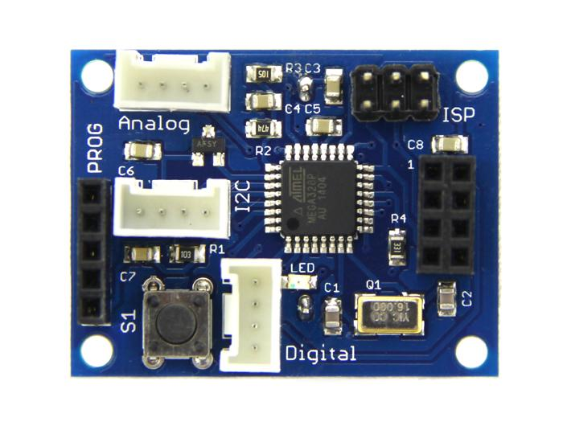
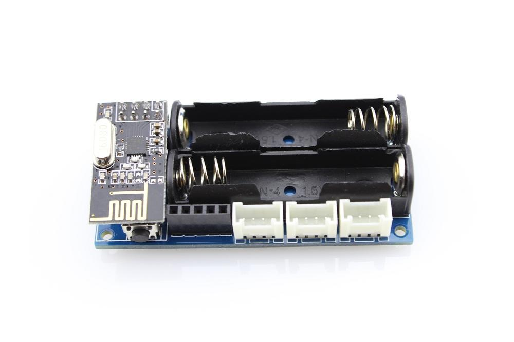
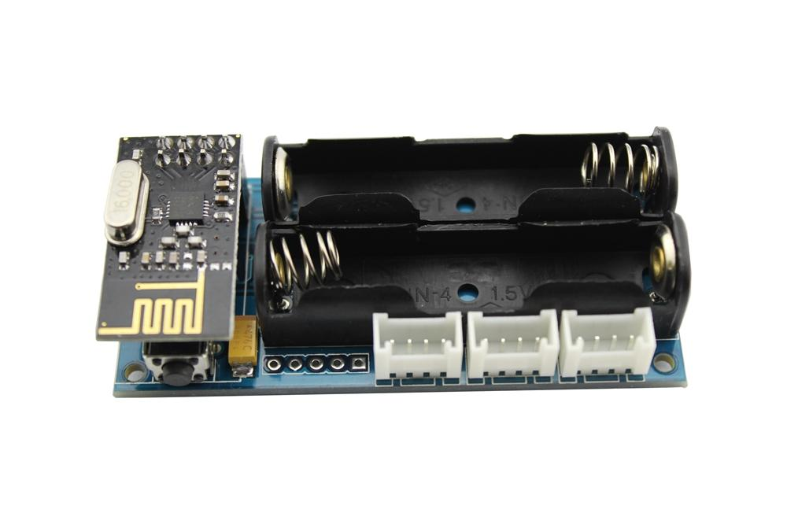
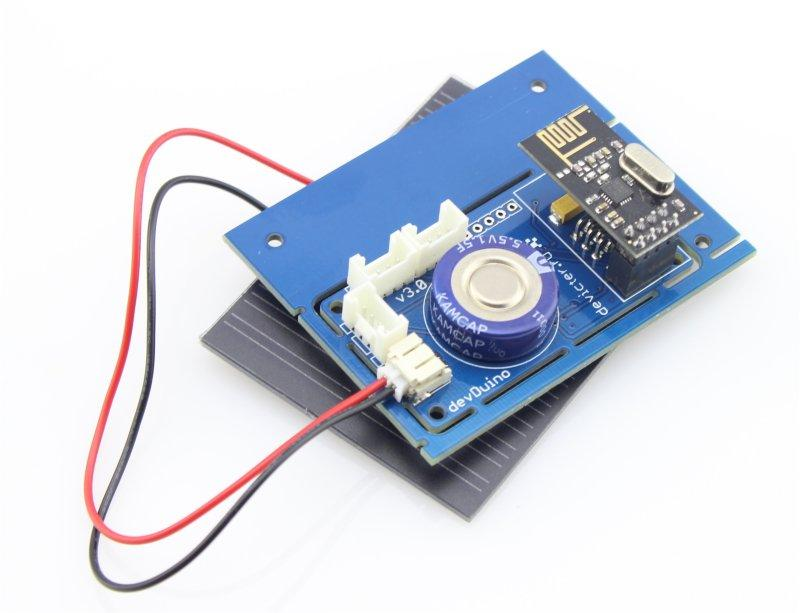
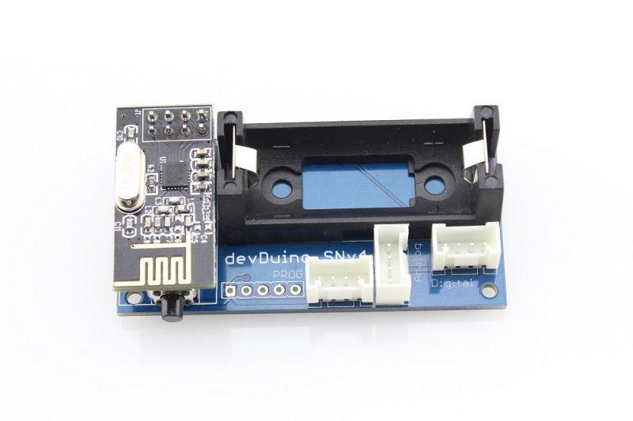

devDuino Sensor Node (ATmega 328) is a compact Arduino-compatible microcontroller and is designed to build wireless networks based on transceiver nRF24L01+.
You can easily connect other sensors (Grove series) or actuators to this platform, to build your remote monitoring or controlling system..
|  |  |  |  |  |
devDuino Sensor Node V1.2 (ATmega 328)
Production completed |
|  |
Here lists the comparison among various versions:
| Parameter | devDuino Sensor Node V1.2 | devDuino Sensor Node V1.3 | devDuino Sensor Node V2.0 | devDuino Sensor Node V2.1 | devDuino Sensor Node V2.2 rev1 | devDuino Sensor Node V3.0 | devDuino Sensor Node V4.0 |
|---|---|---|---|---|---|---|---|
| Product Release Date | 04.11.2013 | 31.03.2014 | 28.03.2014 | 21.10.2014 | 18.10.2015 | 23.08.2014 | 22.12.2014 |
| Production Status | Not produced | In production | Not production | In production | In production | In production | In production |
| Jumper (RFpower) | YES | NO | NO | NO | NO | NO | NO |
| Voltage Divider | YES | YES | YES | YES | NO | NO | NO |
| E2prom onboard | NO | NO | NO | NO | 64kb SPI flash | NO | NO |
| IC Cripto verification | NO | NO | NO | NO | ATSHA204A | NO | NO |
| OTA firmware updates | NO | NO | NO | NO | Supports | NO | NO |
| Built-in sensor | MCP9700 (temperature) | MCP9700 (temperature) | MCP9700 (temperature) | MCP9700 (temperature) | MCP9700 (temperature) | MCP9700 (temperature) | HTU21D (temperature & humidity) |
| Battery | RC2032 x 1 | RC2032 x 1 | AAA x 2 | AAA x 2 | AAA x 2 | 0.5W Solar Panel 1.5 F Super capacitor |
CR123A х 1 |
| Size | 30 х 40 (with RF module 30 х 60) mm | 30 х 40 (with RF module 30 х 60) mm | 30,5 x 67 mm | 32 x 68.5 mm | 32 x 68.5 mm | 55 x 70 mm (break off 31.4 x 57.3) | 30 x 65 mm |